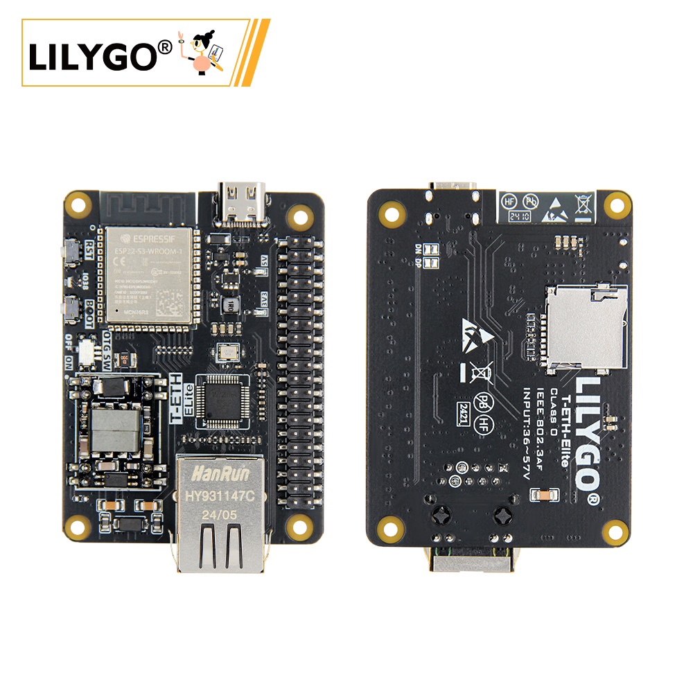
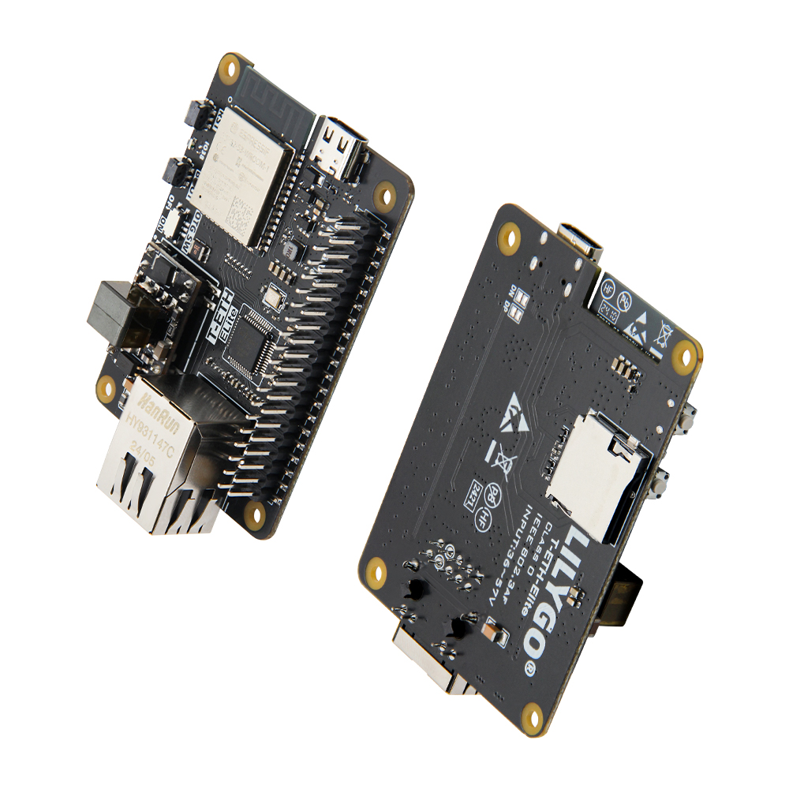
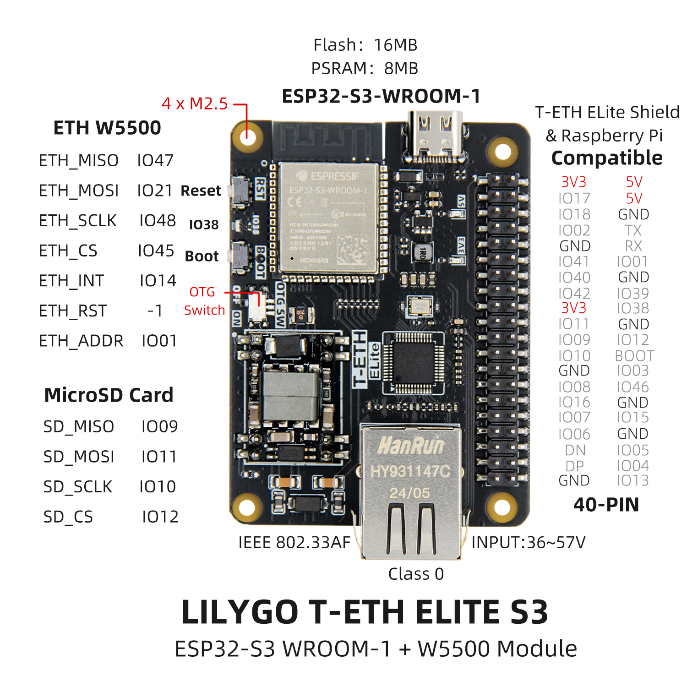
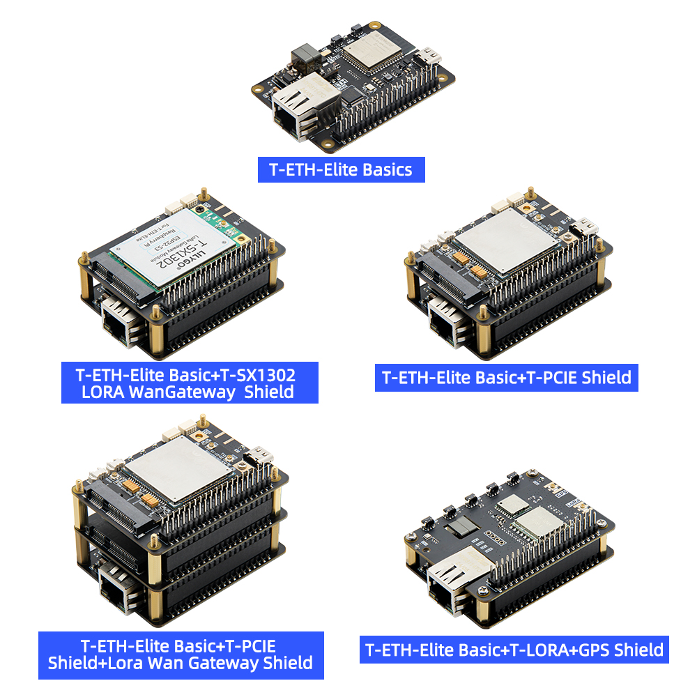
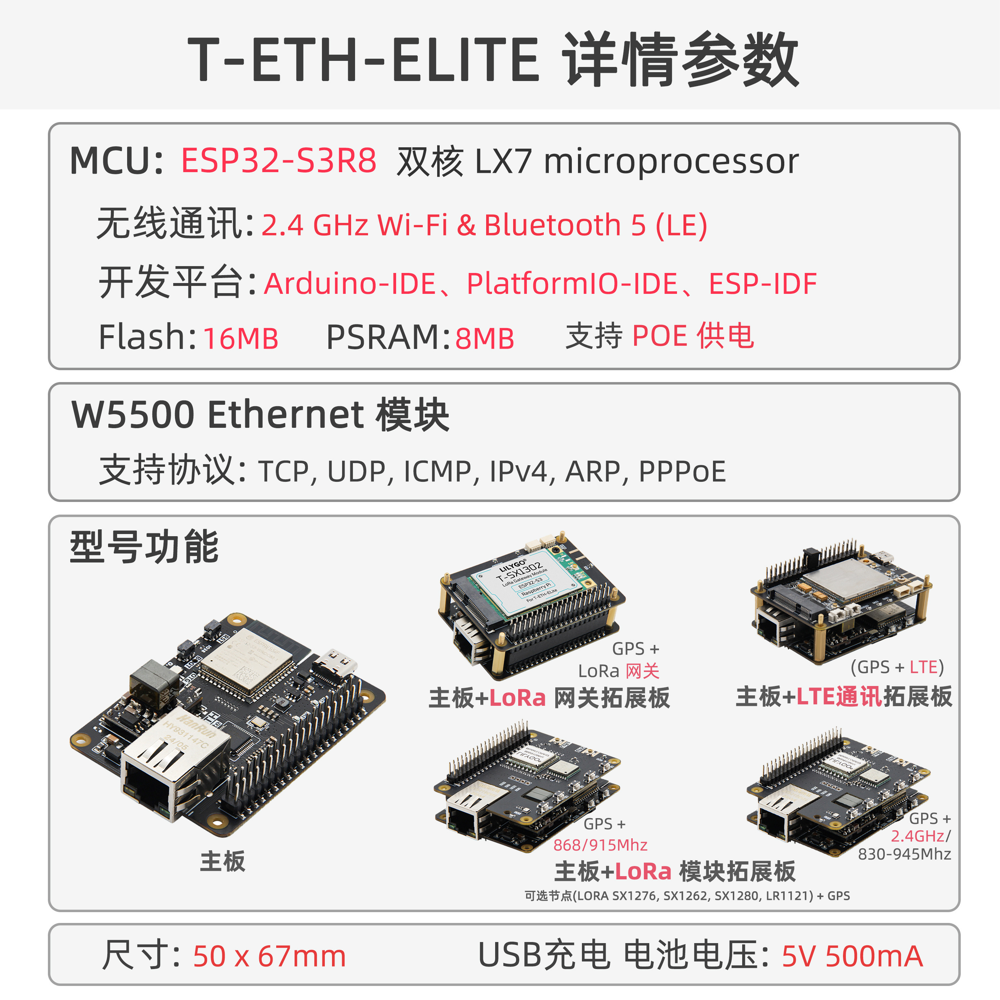

中文 简体
中文 简体LILYGO T-ETH ELite

简介
LILYGO T-ETH ELITE 是一款基于 ESP32-S3-WROOM-1 模组的高性能物联网开发板，集成了 W5500 以太网控制器，支持以太网通信和 PoE（IEEE 802.3af Class 0）供电，输入电压范围为 36~57V。该板载 16MB Flash 和 8MB PSRAM，提供丰富的扩展接口，包括 MicroSD 卡槽（SPI 接口）、40-PIN GPIO（兼容树莓派引脚布局），以及以太网、USB OTG、UART 等外设接口。其设计兼顾了物联网应用的网络连接需求与硬件扩展灵活性，适用于智能家居、工业控制等场景，同时支持与树莓派等设备的兼容协作，为开发者提供了高效的双模（Wi-Fi/蓝牙 + 以太网）开发平台。
外观及功能介绍
外观

引脚图

模块资料
概述

LORa 网关方案
组合：主板 + LORa 网关拓展板
功能：支持搭建 LORa 网络基础设施，兼容 SX1276/SX1262/SX1280/LR1121 等主流模块，可选配 GPS 实现精准定位（如 868/915MHz 频段）。
场景：适用于远距离、低功耗的广域物联网部署，如农业环境监测、智慧城市节点管理。
LORa 终端节点方案
组合：主板 + LORa 模块拓展板
功能：提供终端设备通信能力，支持多模 LORa 模块（SX1276/SX1262 等），可集成 GPS 实现位置追踪。
场景：物流追踪、资产定位、野外传感器数据回传等移动终端场景。
LTE 蜂窝网络方案
组合：主板 + LTE 通讯拓展板
功能：通过 4G/5G 蜂窝网络实现无依赖远程通信，覆盖 Wi-Fi/以太网无法部署的区域。
场景：工业设备远程监控、偏远地区数据传输、车载移动终端等。
多协议融合方案
基础特性：主板原生集成 W5500 以太网（支持 TCP/UDP/IPv4）和 PoE 供电（36~57V），结合 ESP32-S3 的 双模 Wi-Fi/蓝牙，可同时支持有线+无线混合组网。
扩展性：通过 40-PIN GPIO 兼容树莓派生态，支持 MicroSD 存储、USB OTG 及外接传感器，满足边缘计算需求。
场景：智能家居中控、工业自动化控制、多协议网关等复杂系统集成。

| 组件 | 描述 |
|---|---|
| MCU | ESP32-S3R8 Dual-core LX7 microprocessor |
| FLASH | 16M |
| PSRAM | 8M |
| TF 卡 | TF 卡扩展接口 |
| 无线 | 2.4Ghz Wi-Fi + Bluetooth 5.0 |
| USB | 1 × USB Port and OTG(TYPE-C接口) |
| 拓展接口 | 1 × IEE802.3af PoE 接口 + 1 × 40-PIN GPIO 接口 |
| 按键 | 1 x RESET 按键 + 1 x BOOT 按键 + 1 x OTG switch 按键 + 1 x IO38 按键 |
| 电源输入 | 5V/500mA |
| 孔位 | 4 × M2.5 定位孔 |
| 尺寸 | 50 X 67 X 17 mm |
相关资料链接
Github:T-ETH-Series
原理图
依赖库
- Adafruit_BME280_Library
- Adafruit_BusIO
- Adafruit_NeoPixel
- Adafruit_Sensor
- ESP32_USB_Stream
- ETHClass2
- LoRa
- ModbusMaster
- RadioLib
- StreamDebugger
- TFT_eSPI
- TinyGPSPlus
- TinyGSM
- U8g2
应用参考
物联网应用
基于T-ETH-ELite和T-ETH-ELite-Gateway-Shield硬件组合的LoRa网关项目(以上两个硬件缺一不可)
配置方法一:
- 手机连接 ESP32S3 产生网络热点名称为:LilyGo-Gateway 密码:12345678
- 在浏览器中输入
192.168.4.1打开网关配置页面 - 根据标题填写相对应的栏目,填写完成之后点击Apply
- 点击重启按钮,网关将重启按照填写的参数运行
配置方法二:
- 通过网线接入以太网接口
- 打开Serial监视器,从串行监视器中得到连接的IP地址，使用同一个局域网的电脑在浏览器中输入串行打印的IP地址,打开网关配置页面
- 根据标题填写相对应的栏目,填写完成之后点击Apply
- 点击重启按钮,网关将重启按照填写的参数运行
网关配置参数解释:
- Next time Boot : 点击重启之后运行的模式是什么,
- Soft AP Mode : 网络热点模式,只用于配置网关设置
- Station Mode : 站模式,用于连接AP
- Ethernet Mode ： 以太网模式,此模式可以不设置连接WiFi
- Frequency Plan : LoRa网关运行的频率计划, 请根据使用地的法律法规进行设置
- CN470 : Asia
- EU868 : Europe
- US915 : USA
- 请注意,频率计划要与实际使用的SX1302网关频率适应，比如购买的868MHz的LoRa网关，只能配置为868MHz，不能配置为470MHz,915MHz
- 其他计划请参考 The Things Network Regional Parameters
- Radio 1 Center Frequency: 射频中心频率设置 , 中心频率仅供参考,根据当地法律法规进行填写 , 如果使用TTN ， 可以在配置网关完成后下载全局配置文件，找到中心频率，将它填写到栏目中
- CN470 : 470600000 Hz
- EU868 : 867500000 Hz
- US915 : 915600000 Hz
- 请注意,频率计划要与实际使用的SX1302网关频率适应，比如购买的868MHz的LoRa网关，只能配置为868MHz，不能配置为470MHz,915MHz
- Radio 2 Center Frequency: 射频中心频率设置 , 中心频率仅供参考,根据当地法律法规进行填写, 如果使用TTN ， 可以在配置网关完成后下载全局配置文件，找到中心频率，将它填写到栏目中
- CN470 : 471400000 Hz
- EU868 : 868500000 Hz
- US915 : 916300000 Hz
- 请注意,频率计划要与实际使用的SX1302网关频率适应，比如购买的868MHz的LoRa网关，只能配置为868MHz，不能配置为470MHz,915MHz
- Wi-Fi SSID: 无线ap名称
- 如果 Next time Boot 选择为 Ethernet Mode 可以不填写,如果要使用无线接入模式,则填写WiFi SSDI
- Wi-Fi Password: 无线ap密码
- 如果 Next time Boot 选择为 Ethernet Mode 可以不填写，如果要使用无线接入模式,则填写WiFi 密码
- NS Host: LoRa 网关服务器域名或者IP地址
- The Things Network 在创建网关完成之后可以在网关界面查看接入域名
- NS Port: LoRa 网关服务器端口
- The Things Network 默认使用 1700 作为通讯端口
- Gateway ID: 八个字节的网关ID，可以随意填写十六进制的八个字节,不能与其他的网关ID重复,例如 E84E06FFFE316166
项目可参考Github：LilyGO-ETH-Gateway
YouTuBe参考视频：TTN&LilyGO LoRa Gateway
软件开发
Arduino 设置参数
| Arduino IDE Setting | Value |
|---|---|
| Board | ESP32S3 Dev Module |
| Port | Your port |
| USB CDC On Boot | Disable |
| CPU Frequency | 240MHZ(WiFi) |
| Core Debug Level | None |
| USB DFU On Boot | Disable |
| Erase All Flash Before Sketch Upload | Disable |
| Events Run On | Core1 |
| Flash Mode | QIO 80MHZ |
| Flash Size | 16MB(128Mb) |
| Arduino Runs On | Core1 |
| USB Firmware MSC On Boot | Disable |
| Partition Scheme | 16M Flash(3M APP/9.9MB FATFS) |
| PSRAM | OPI PSRAM |
| Upload Mode | UART0/Hardware CDC |
| Upload Speed | 921600 |
| USB Mode | CDC and JTAG |